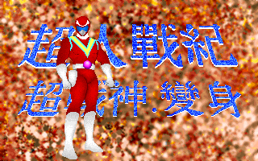
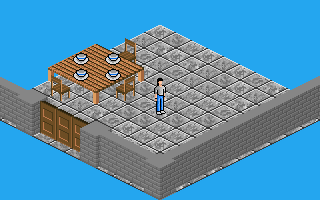
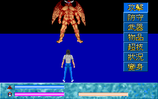

名稱：超人戰記 (Heroic Poetry: Super Mars，中文版)
簡介：智冠1992年出品的角色扮演遊戲，為第三屆金磁片獎金牌獎作品，以3D斜角畫面呈現，
單人回合制方式戰鬥 [待補]。



保護：圖案數字密碼，破解碼：
GAME.EXE
96 0D 6A 06 (不用輸入密碼)
-- -- EB 39
或
3B C6 75 28 C7 46 (隨便輸入一次密碼)
8B -- 90 90 -- --
或
75 03 E9 B3 (隨便輸入三次密碼)
EB -- -- --
SGAME.EXE
3A 76 59 6A 1C (不用輸入密碼)
-- -- -- EB 32
或
3B C6 75 28 C7 46 (隨便輸入一次密碼)
8B -- 90 90 -- --
或
75 03 E9 3C (隨便輸入三次密碼)
EB -- -- --
備註：有EMS可執行GAME.EXE，有無EMS皆可執行SGAME.EXE。
備註：電腦速度不可太快，否則難以操控。